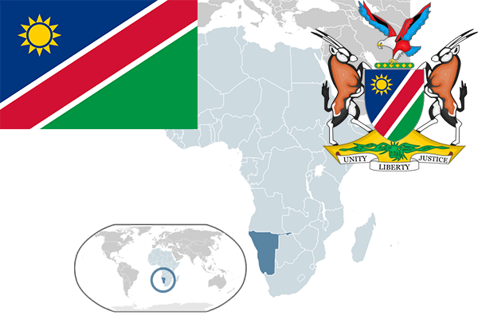

To`liq nomi: Namibiya Respublikasi
Region: Janubiy Afrika
Qonunchilik shakli: Prezidentlik respublika
Mustaqillik kuni: 21 mart 1990 (JARdan)
Poytaxt: Vindxuk
Maydoni: 825,418 km²
Chegaradosh davlatlari: Angola, Zambiya, Botsvana, JAR
Aholisi: 2 358 163 (2013-yil)
Aholi zichligi: 2,2 /км²
Aholining o`rtacha yoshi: 65,02 (2015-yil)
Rasmiy tili: Ingliz tili
Dini: Xristian
Pul birligi: Namibiya dollari
Telefon prefiksi: +264
Internet domen: .na
Xalqaro tashkilotlarga a`zoligi: BMT
Dengiz va okeanlarga chiqishi: Atlantika okeani
YIM: Butun: $ 11,780 mil.(2017-yil) Jon boshiga: $5,073
Yirik shaharlari: Vindxuk